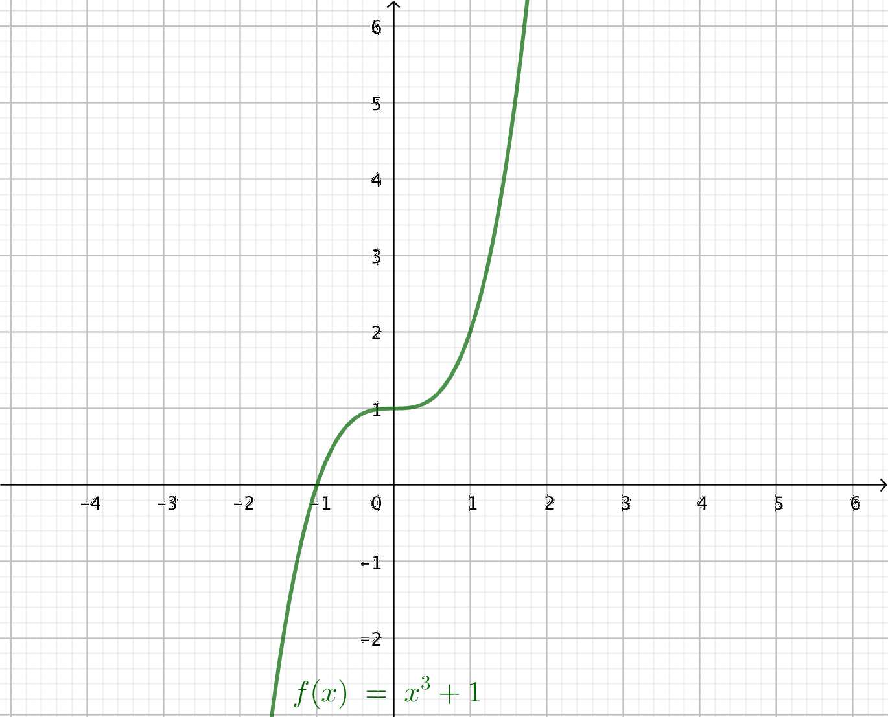
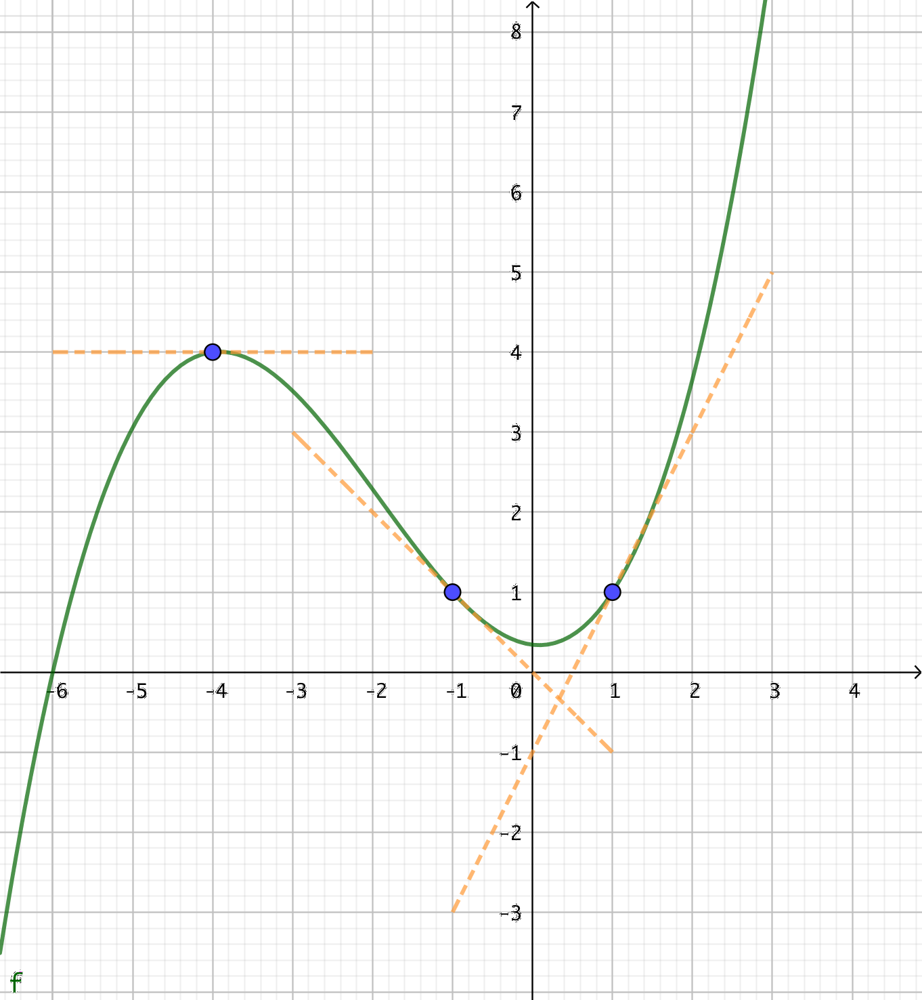
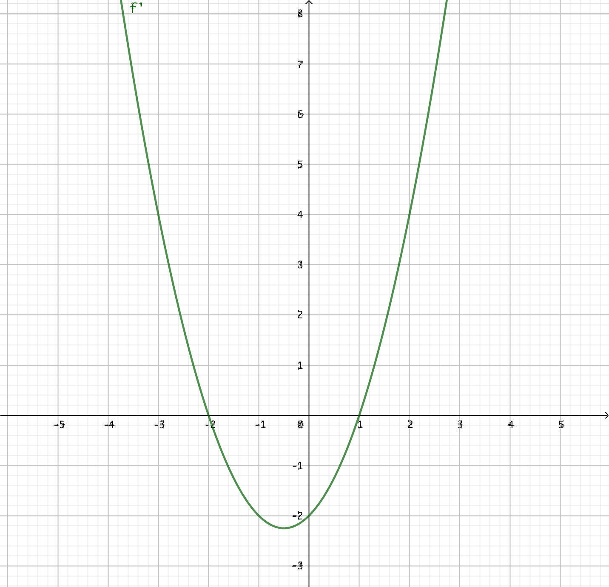
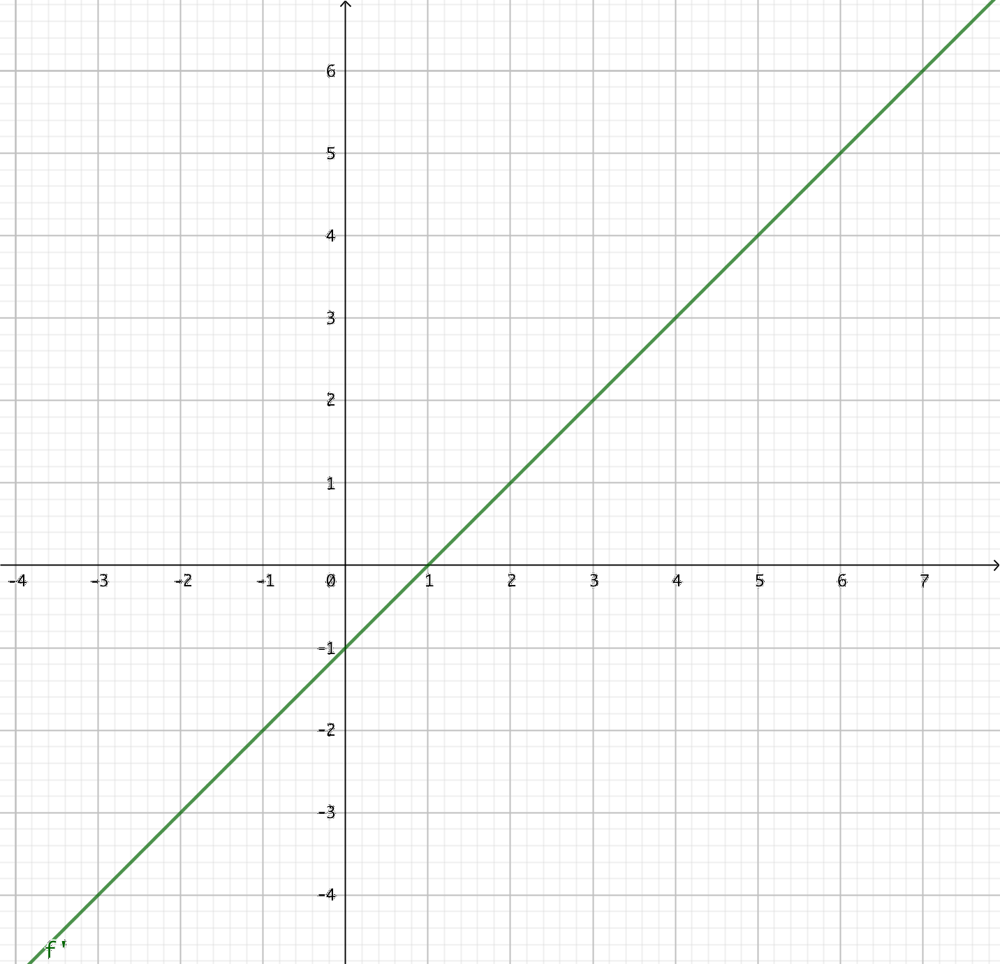

5. Förändringen hos en funktion
Före vi börjar med att derivera och matematiskt bestämma tangenter för funktioner tar vi som introduktion och bestämmer tillväxthastigheter för funktioner. Det gör vi genom att anpassa in en tangent med hjälp av en linjal. Tangentens riktningskoefficient berättar för oss om funktionens tillväxthastighet.
Bestäm tillväxthastigheten för funktionen \(f(x)=x^2-1\) då \(x=1\).
Exempel 1 Bestäm riktningskoefficienten för tangentem i punkten \(x=2\) för \(f(x)= -x^2+4\) .
Riktningskoefficientens värde för tangenten i en punkt för en funktion berättar för oss funktionens tillväxthastighet. Är tangentens riktingskoefficient negativ är funktionen avtagande, är den positiv är funktionen växande.
Uppgifter
Ändra på värdet \(k\) genom att dra i glidaren så att linjen, \(g\), är en tangent för funktionen, \(f\). Vilket värde skall \(k\) ha?
\(k\) skall ha värdet 2.
- Bestäm tillväxthastigheten för \(f(x)=x^2-2\) i \(x=2\) genom att använda dig av linjal. Alternativt kan du rita in funktionen på GeoGebra och använda dig av linjeverktyget för att bestämma en linje. Med verktyget för riktingskoefficienten får du fram linjens riktingskoefficient.
 Exakt svar är 4. Något mellan 3 och 5 är helt ok.
Exakt svar är 4. Något mellan 3 och 5 är helt ok. - Bestäm tillväxthastigheten för \(f(x)=x^3-1\) i \(x=1\) genom att använda dig av linjal. Alternativt kan du rita in funktionen på GeoGebra och använda dig av linjeverktyget för att bestämma en linje. Med verktyget för riktingskoefficienten får du fram linjens riktingskoefficient.
 Exakt svar är 3. Allt mellan 2 och 4 är helt ok.
Exakt svar är 3. Allt mellan 2 och 4 är helt ok. - Bestäm riktningskoefficienten för tangent i punkten \(x=-1\) för \(f(x)= -x^2+2\) genom att rita in en tangent med linjal. Alternativt kan du rita in funktionen på GeoGebra och använda dig av linjeverktyget för att bestämma en linje. Med verktyget för riktingskoefficienten får du fram linjens riktingskoefficient.
 Exakt svar är 2. Allt mellan 1,5 och 2,5 är ok.
Exakt svar är 2. Allt mellan 1,5 och 2,5 är ok. - Bestäm riktningskoefficienten för tangent i punkten \(x=1\) för \(f(x)=x^3+1\) genom att rita in en tangent med linjal. Alternativt kan du rita in funktionen på GeoGebra och använda dig av linjeverktyget för att bestämma en linje. Med verktyget för riktingskoefficienten får du fram linjens riktingskoefficient.

Exakt värde är 3. Allt mellan 2,5 och 3,5 är ok. - Vad berättar funktionens tillväxt hastighet åt oss och hur får vi reda på den?
Funktionens tillväxthastighet får vi reda på genom att bilda tangenten för funktionen i en viss punkt.
Är tangentens riktningskoefficient
- positiv är funktionen växande,
- negativ är funktionen avtagande eller
- om den har värdet noll är funktionen konstant.
- Tangentens riktningskoefficient eller derivatans värde i en punkt \( x_0 \) betecknas med \( f'(x_0) \). Svara baserat på grafen av \( f \) och tangenterna som är ritade för funktionen.

- Värdet av funktionens derivata, för \( f'(-4) \), \( f'(-1) \) och \( f'(1) \).
Derivatan är värdet för riktningskoefficienten.
Vi får \( f'(-4) = 0\), \( f'(-1)=-1 \) och \( f'(1)=2 \).
Se till att du räknar ut dem.
- Värdet av funktionsvärdena \( f(-4) \), \( f(-1) \) och \( f(1) \).
Funktionsvärdena är \( f(-4)=4 \), \( f(-1)=1 \) och \( f(1)=1 \).
- Värdet av funktionens derivata, för \( f'(-4) \), \( f'(-1) \) och \( f'(1) \).
- På bilden ser du grafen av den deriverbara funktionen \( f \). Utgå från grafen av funktionen och svara då

- \( f'(x) = 0 \)
Vi söker den punkt där riktningskoefficienten för tangenten för funktionen har värdet 0. Där funktionen byter riktning.
Alltså \( x = 2 \).
- \( f'(x) > 0 \)
Vi söker det intevall där riktningskoefficienten för tangenten för funktionen är positiv. Där funktionen är växande.
Alltså \( x > 2 \).
- \( f'(x) < 0 \)
Vi söker det intevall där riktningskoefficienten för tangenten för funktionen är negativ. Där funktionen är avtagande.
Alltså \( x < 2 \).
- \( f'(x) = 0 \)
- På bilden ser du grafen av den deriverbara funktionen \( f \). Utgå från grafen av funktionen och svara då

- \( f'(x) = 0 \)
Vi söker den punkt där riktningskoefficienten för tangenten för funktionen har värdet 0. Där funktionen byter riktning.
Alltså \( x = 0 \) och \( x = 2 \).
- \( f'(x) > 0 \)
Vi söker det intevall där riktningskoefficienten för tangenten för funktionen är positiv. Där funktionen är växande.
Alltså \( 0< x < 2 \).
- \( f'(x) < 0 \)
Vi söker det intevall där riktningskoefficienten för tangenten för funktionen är negativ. Där funktionen är avtagande.
Alltså \( x < 0 \) och \( x > 2 \).
- \( f'(x) = 0 \)
- På bilden ser du grafen av derivatafunktionen \( f' \) för den deriverbara funktionen \( f \). Utgå från grafen av funktionen och svara då

- \( f \) byter riktning.
Vi söker den punkt där riktningskoefficienten för tangenten för funktionen har värdet 0. Alltså nollställena för derivatafunktionen.
Alltså \( x = -2 \) och \( x = 1 \).
- då \( f \) är växande.
Vi söker det intevall där riktningskoefficienten för tangenten för funktionen är positiv. Alltså där derivatafunktionen är positiv.
Alltså \( x < -2 \) och \( x > 1 \).
- då \( f \) är avtangande.
Vi söker det intevall där riktningskoefficienten för tangenten för funktionen är negativ. Derivatafunktionen är negativ.
Alltså \( -2 < x < 1 \).
- \( f \) byter riktning.
- På bilden ser du grafen av derivatafunktionen \( f' \) för den deriverbara funktionen \( f \). Utgå från grafen av funktionen och svara då

- \( f \) byter riktning.
Vi söker den punkt där riktningskoefficienten för tangenten för funktionen har värdet 0. Alltså nollställena för derivatafunktionen.
Alltså \( x = 1 \).
- då \( f \) är växande.
Vi söker det intevall där riktningskoefficienten för tangenten för funktionen är positiv. Alltså där derivatafunktionen är positiv.
Alltså \( x > 1 \).
- då \( f \) är avtangande.
Vi söker det intevall där riktningskoefficienten för tangenten för funktionen är negativ. Derivatafunktionen är negativ.
Alltså \( x < 1 \).
- \( f \) byter riktning.